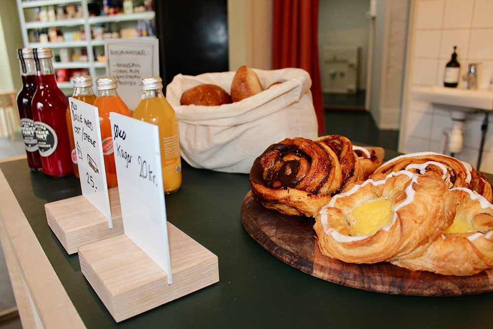
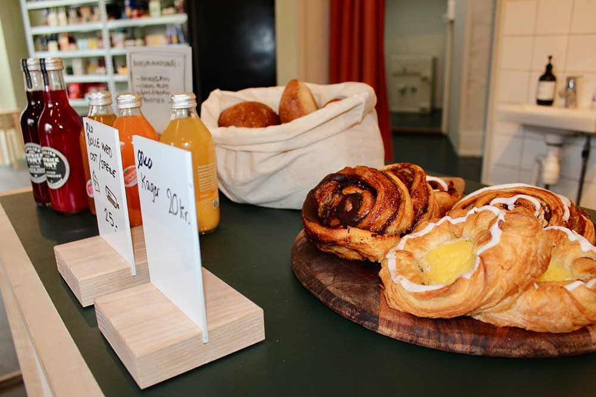

I kiosken finder du mange lækre specialiteter og herre gode vine. Vores iskolde drikkevarer som hindbærbrus, sportscola og lemonade fører dig helt tilbage til barndommen. Er du i snackhumør er der rig mulighed for at guffe en chokoladebar i dig eller tilbyde et holdkæft bolcher til en god ven. Står du med morgenhår og har glemt alt om at handle så kom forbi kiosken, vi sælger nemlig også Frosties, Coco pops og Ota solgryn præcis som du kender dem. Slå vejen forbi kjolleren anytime, hvis du mangler værktøj, sukker eller krydderurter, du kan til hver en tid låne det hos din yndlingsnabo.
Vi kan også byde på en fremragende kop økologisk kaffe. Du kan nyde den to-go eller ved et af vores hyggelige borde. Der er ren råhygge i kiosken rundt ved bordene og hvis du bliver sulten, kan vi diske op med en saftig toast eller en bolle med ost. Du er altid velkommen til at snuppe noget lækkert fra kiosken og nyde det udenfor ved vores borde og bænke.
Vores Honduras kaffe og Double Crema Øko kaffe får vi fra en lokal leverandør, som gør at kaffen altid er frisk. Vi maler bønnerne, fører vand igennem og til sidst står vi med en dampende økologisk kop kaffe til dig.
Den tætte forbindelse med vores leverandører er vigtigt for os, så vores kunder kun får de allerbedste råvarer.
Vores brød og kager er altid friskbagte af en vaskeægte bager. Han står meget tidligt op hver morgen for at ælte og bage, så du kan stikke hovedet forbi kjolleren efter morgenmad to-go eller en toast til din frokost. Har du brug for noget til den søde tand, så prøv en af de lækre kager, de skuffer aldrig.
 

Kom og vær en del af
strikkeklubben torsdag aften
og tag din søster, veninde
eller mor med under armen.
Kom og smag vores nye
is-pind, som består af
Tag din far, bror eller ven
med til cykel-dag hos din
nye nabo og nyd en toast
i butikken efter turen.
Smag vores nye variant af
specialøl og nyd den i det
forhåbentlige gode
sommervejr foran butikken.
Kom og bin din egen buket i
butikken d.15 juni kl.10.00
sammen med din nabo.
Vær med til bogaften, hvor du
kan få anbefalet de nyeste
bøger og fortæl om dine
favoritter til din nabo.
På de fine stålreoler bag langbordet kan du finde alle vores lækre livsstilsprodukter, til dig og dit hjem. Du finder smukt håndlavet keramik fra Puglia i Italien, som gør at keramikken har sit eget unikke design. Der er altså ingen, som har en skål eller et fad magen til dit. – sejt ik’?
Vi går all-in på hyggelige stunder, og derfor kan du købe bæredygtige sojavoks lys og en unisex t-shirt, i lækkert økologisk bomuld. Træk i en blød t-shirt og tænd for stearinlysene, så er der dømt max hygge til dig fra os. Kom ned og kig på hylderne, vi skifter løbende vores brugskunst ud, så der altid er nye spændene ting for dig at udforske.

Giv din nabo et gavekort....
sgsebtnbfhn
sdtnhrsx hnars
nsrrf dgh rtdh hdgggrdsg
rtsnfg mrsyfhnh
fndxhnfgbdfxzd rgdg
Nabo Kiosk
Ingerslevs Plads 1A
8000 Århus C
Find rutevejledning
her